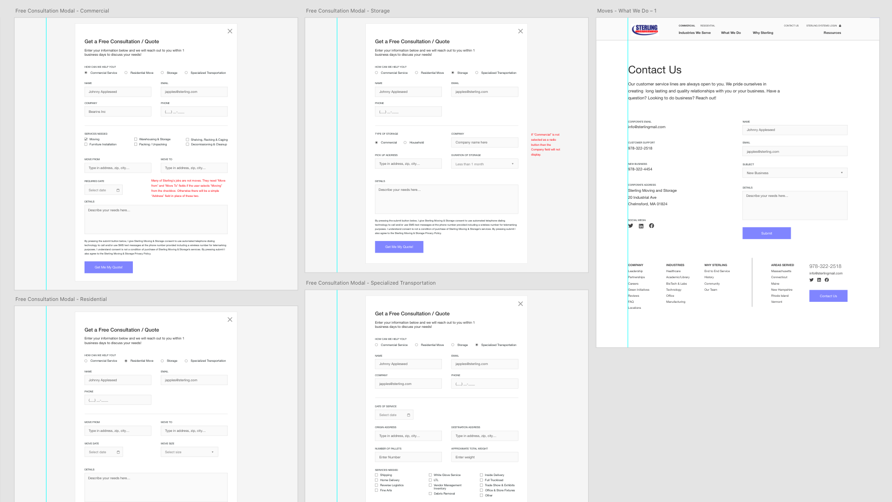
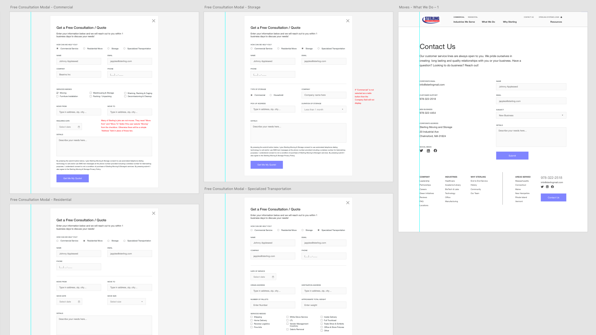

Sterling Corporation was seeking to refresh their web presence to re-assert their well known high standing in the logistics and moving industry while educating their visitors of their new unified presence.
Sterling had three existing sites that needed to to come into one unified location. Before making any strategic decisions, a baseline understanding had to be set in Discovery about who and what Sterling Corporation is.
At the end of our discovery process we came to a few conclusions that would decide the direction of the rest of the project.

Once the sitemap was approved we got to work on some early homepage wireframe iterations. What I find helpful when wireframing is making an extremely lightweight page structure using generic page content to highlight text areas and images using large rectangles and shapes to begin to sculpt the shape of the page.
After the homepage is settled on it becomes a race to iterate on wireframes from the sitemap until the hours are used up. The more wireframes that can be presented to the client the better, especially if the wireframes are connected in a prototype.
 

Working on the new Sterling Corportion experience was easily my favorite piece of professional work because it saw our entire UX process (except for personas) through to finish and the development team building the code crushed the build. The client was extremely impressed and they got exactly what they were shown! The website can be seen here.